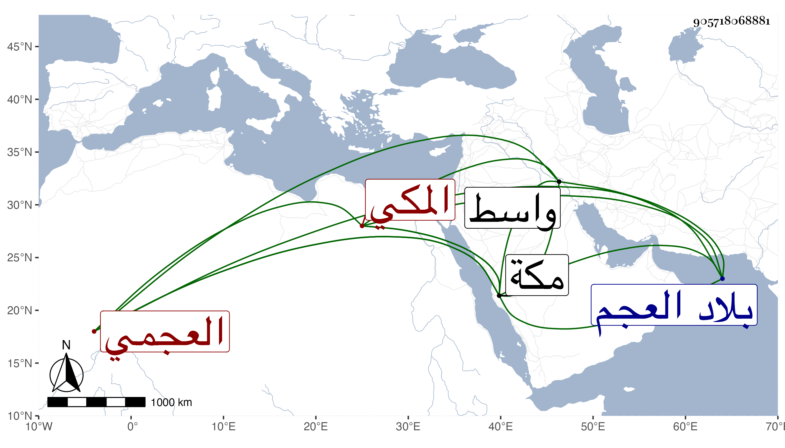

0902Sakhawi.DawLamic.ITO20230111-ara1.EIS1600.905718068881
Biography ID: 905718068881
231
محمد بن عبد الله بن محمد بن علي بن عثمان أبو النصر العجمي الأصل المكي . ولد سنة أربع عشرة أو التي بعدها ظنا بمكة وأمه أم الحسن نسيم ابنة الإمام أبي اليمن محمد بن أحمد بن الرضى إبراهيم الطبري ، ممن سمع في جمادى الأولى سنة ثلاث وعشرين على خالتيه أم الحسن فاطمة وأم محمد علماء المسلسل وتساعيات الرضيى الطبري وعلى الأولى فقط خماسيات ابن النقور ، وتكررت زيارته لطيبة ودخل بلاد العجم ، وكان فقيرا طيب النفس يسكن كثيرا واسط من هدة بني جابر على طريقة سلفه . مات بمكة في ذي الحجة سنة تسع وستين ودفن بتربة أهل أمد من المعلاة .
